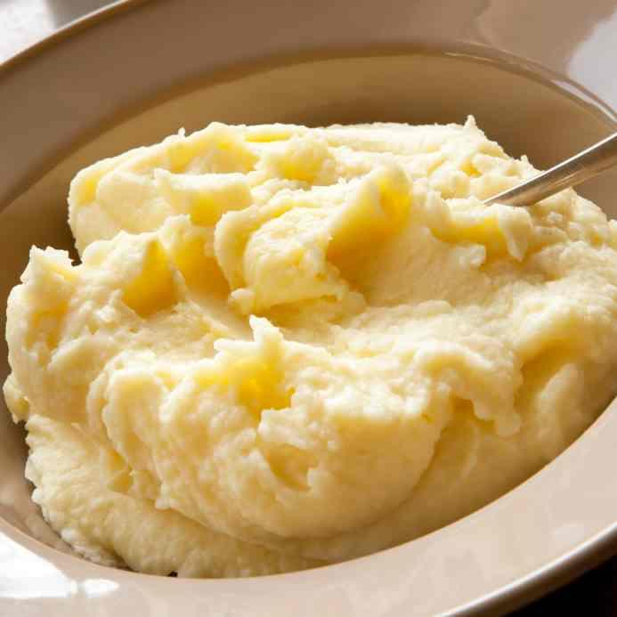

Pure

La foto de un pure bien espeso
Ingredientes
- 1 kg. de patatas
- 60 g. mantequilla
- 2 l. de agua
- Sal (a gusto)
- 100 ml. leche entera
Pasos
- Debemos de cocer las patatas enteras, sin pelar e intentando que sean todas del mismo tamaño. Por un lado las coceremos con piel para evitar que el agua de la cocción se introduzca en la patata dejándola un poco aguada, lo que sería perjudicial para la textura final del puré.
- Debemos intentar, en la medida de lo posible, que todas sean del mismo tamaño, ya que el punto de cocción de una patata grande será distinto al de una patata pequeña en un mismo tiempo.
- Las patatas más grandes quedarán algo crudas o las pequeñas demasiado cocidas. Debemos cocer las patatas introduciéndolas en una cazuela y cubriéndolas de agua fría ligeramente salada.
- Las coceremos durante unos 30 minutos, dependiendo un poco del tamaño de las patatas que hayamos elegido.
- Podemos comprobar que las patatas están en su punto cuando al pincharlas con un cuchillo estas no ofrecen resistencia. Nos permiten pincharlas y retirar el cuchillo sin que se deshagan.
- Con un cuchillo afilado y estando todavía calientes, les retiramos la piel exterior. El momento de triturarlas es un punto a tener en cuenta a la hora de conseguir un puré de patata cremoso, suave y sin grumos.
- A la hora de incorporar la mantequilla, es importante que esté a temperatura ambiente. Así será más fácil incorporarla a las patatas y evitaremos el tener que trabajarlas en exceso para integrarlos.
Será más fácil que la mantequilla se derrita, con el calor de la patata si la utilizamos a temperatura ambiente que si estuviera fría.
- La leche debemos calentarla antes de añadirla a las patatas. Ayudará a que se quede perfectamente combinada y dará como resultado un puré más cremoso.
- Algo fundamental si lo que queremos es servir el mejor puré de patata posible, es hacerlo en el momento justo. Es decir, tan pronto como sea posible una vez que lo tenemos listo.
Y con estos pasos ya queda terminado el puresito y listo para poner en la mesa